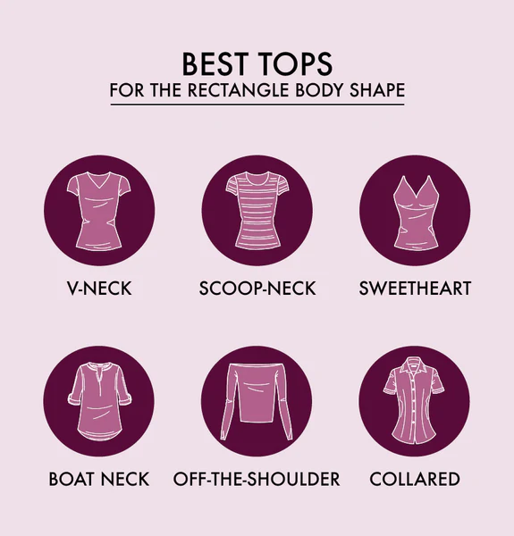
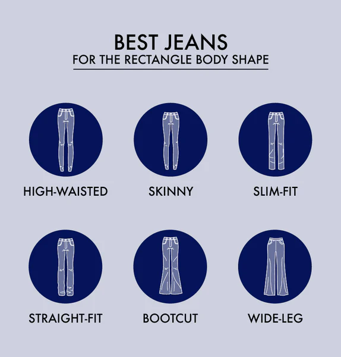
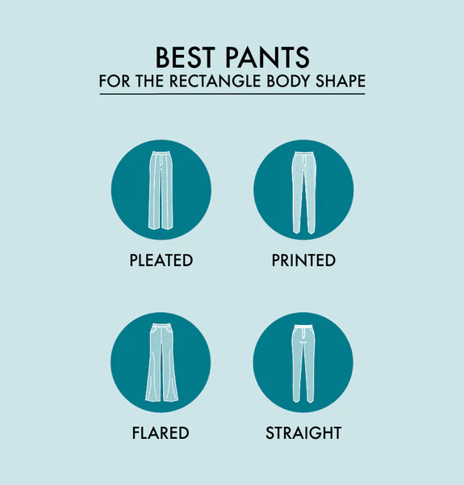
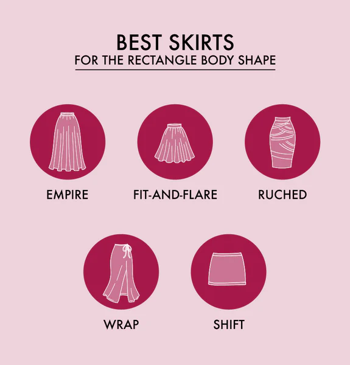
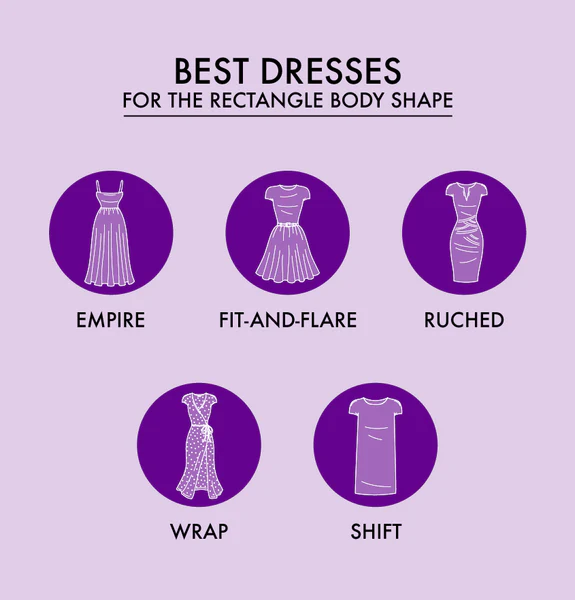
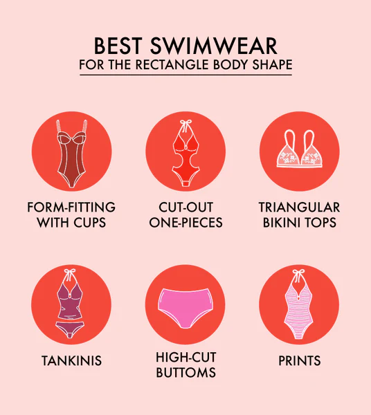

TOPS
Tops for rectangle body shapes should focus on the neckline, as an open neck will draw attention upward toward your face. Your tops should fit your body well. But should not be too tight and loose. Pull on tops that accentuate wide collars and even your enviable shoulder lines.
| Top Type | Dress Describes |
|---|---|
| V-Neck | A V-neck, whether shallow or deep, will accentuate your collarbones. |
| Scoop-Neck | Scoop-neck tops are an easy, flattering way to draw attention upward to your face and elongate your neck. |
| Sweetheart | A sweetheart neckline, which resembles the top of a heart, will help give the illusion of curves and a bust. |
| Off-the-Shoulder | Off-the-shoulder tops are an easy way to add elegance or a playful touch to an outfit and help give the illusion of curves. |
| Boat Neck | Boat neck, or bateau, tops run horizontally across the collarbone and can draw the eye out to your shoulders, giving the illusion of volume. |
| Collars | Collars – especially those with details – provide visual interest that draws the eye toward your face. |
JEANS
When shopping for women's jeans for a rectangle body shape, the most important thing to consider is defining your shape. The best jeans for a rectangle body shape will depend on the top you've chosen, but a good rule of thumb is to look for jeans that add curves to your silhouette. You can do this with jeans that have embellishments at the hips and jeans that have back pockets, which can make you look curvier in the right places.
| Pant Type | Dress Describes |
|---|---|
| High-Waisted | High-waisted jeans can elongate your legs and help create a defined waist. Tip: If you have a short torso, choose mid-rise jeans. |
| Skinny | Skinny jeans are a popular choice for rectangles because they can accentuate your slender legs. |
| Slim-Fit | Slim-fit jeans can accentuate your slender legs but provide the illusion of curves better than skinny jeans can. |
| Straight-Leg | Like slim-fit jeans, straight-leg jeans accentuate your best features while adding more volume. |
| Bootcut | Flare jeans are great for adding interest and making the legs appear longer. Just avoid overly exaggerated flares. |
| Wide-Leg | To give the illusion of fuller hips and butt, consider wide-leg jeans. |
PANTS
For those times when jeans won’t cut it, you need a few pairs of trusty pants in your wardrobe. Be it formal pants or jeans or baggy pants, everything will look good on you. But, wear a low waist or one that accentuates the waistline. You can choose light or bold colors as both will help you show off your curves perfectly.
| Pant Type | Dress Describes |
|---|---|
| Pleated | And no – we don't mean the pleated waistlines of the ‘80s! Instead, consider flowy, pleated pants that give the illusion of a skirt and create volume on the bottom half of your body. |
| Printed | Prints are a rectangle shape's best friend and an easy way to add detail and texture. |
| Flared | Just as with flared jeans, flared pants are a great way to balance out a rectangle body shape – just be sure to avoid overly exaggerated styles. |
| Straight | A good, tailored pair of straight pants are a must-have in your closet. |
SKIRT
Outerwear is essential to create a top and bottom shape for your rectangle shape. The next time the temperature outside drops, consider those factors as well.
| Skirt Type | Dress Describes |
|---|---|
| Trench | For a classic look, trench coats are an excellent fit for rectangle body shapes. |
| Dusters | Pops of color work well for rectangle body shapes thanks to clean lines. Try adding an open duster over a top with a bold print to further accentuate your look. |
| Peplum | Peplum jackets hit at the smallest part of your waist, instantly adding curves, and creating an attractive silhouette. |
| Double-Breasted | Double-breasted jackets add a polished look to any outfit and hang nicely from your natural silhouette. |
| Belted | Belted jackets help define your waist and create the illusion of a curvier figure. |
| Vests | Vests are an excellent choice for casual outerwear as they draw attention to your shoulders and arms. |
DRESS
You want to choose a casual jumpsuit or a formal dress for your rectangular body shape. It gives you a very shapely and attractive body. Clothes should be chosen to highlight the body shape. Straight body shapes can look amazing by pulling on a great jumpsuit.
| Dress Type | Dress Describes |
|---|---|
| Empire | Anything that creates the illusion of a waist is the right look for a rectangle body shape. |
| Fit-and-Flare | Similarly, fit-and-flare dresses help draw attention to the waist and give a fuller look to the skirt to balance your figure. |
| Ruched | Ruching is a specific method of construction that creates pleats and gathers. For a rectangle body shape, ruched designs create interest. |
| Wrap | The wrap dress is a classic style that looks flattering on nearly every body shape. |
| Shift | Although rectangles should go for styles that add shape, rules were meant to be broken. Shift dresses have clean lines and a polished look, which makes this style a great option for rectangles with smaller busts and hips. |
SWIMWEAR
Looking for the perfect swimwear for rectangle body shapes? These swimwear styles will help you look and feel your best next time you’re poolside:
| Dress Types | Style Describes |
|---|---|
| Form-Fitting with Cups | Look for swimwear that is form-fitting with built-in cups, which will help to play up your natural curves. |
| Cut-Out One-Pieces | One-piece swimsuits with cutouts in the midsection give the illusion of an hourglass figure by nipping your waist at its smallest point. |
| Triangular Bikini Tops | Avoid straight bandeau style bikini tops, which can further accentuate the straight lines of your body shape. Instead, opt for triangular bikini tops, which can show off your curves and elongate your neck. |
| Tankinis | Tankinis provide extra coverage and can help accentuate your waist. Choose a tankini in a fun print with solid-colored bottoms, which can help to create a curvier torso line. |
| High-Cut Bottoms | Since defining your waist and creating curves is the goal, go for high-cut bottoms, which can give the illusion of fuller hips and help to create a more well-defined waistline. |
| Prints | Bold, fun prints, textures, and other details can add interest. We recommend avoiding horizontal stripes and instead going for diagonal lines, which can visually cinch your waist. |
SHOES AND ACCESSORIES
Accessories can complete any outfit, but choosing the right accessories is an art and a science. Here are some accessories to consider when piecing together your rectangle body shape outfits:

| Shoe and Accessor Types | Style Describes |
|---|---|
| Round-Toe Shoes | When selecting the shape of dress shoes – like heels – consider round-toe shoes to avoid having a too-rectangular look. |
| Boots | Go for pointed-toe boots, which will accentuate your legs even more. |
| Belts | Belts are the best way to create the illusion of a waist for rectangle body shapes. Create the illusion of an even smaller midsection with a dark belt in black or navy. |
| Statement Earrings | Remember that drawing the eye up accentuates your body type. You can do this with a bold pair of statement earrings rather than a statement necklace, which can truncate your neck and shoulder area. |
| Statement Purse | Sometimes throwing on jeans and a t-shirt is good enough! Elevate a simple look with a statement purse in a fun color. |
| Shapewear | Love it or hate it, shapewear can help enhance your overall look by defining your waist. |